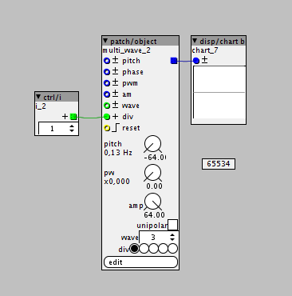

I would like to code a slower lfo, is there a way to modify the existing LFOs and make them slower?
How to code slower LFOs
janvantomme
#2
It's possible, but the speed of the LFO won't reflect the values on the dial.
This approach might work, but I haven't tested anything since I don't have an Axoloti board near me.
If you take a look at the code of lfo/saw, you'll notice this piece of code:
MTOFEXTENDED(param_pitch + inlet_pitch,freq);
Phase += freq>>2;
The pitch of the inlet and the parameter dial are converted into a frequency. The freq variable is then added to the phase.
You can slow the LFO down if you divide the pitch with a number, in this case 2. You can also add a parameter to set this number.
MTOFEXTENDED( (param_pitch + inlet_pitch) / 2, freq );
philoop
#3
Thanks Jan!
It only works somehow if i not divide thru 2, but instead multiply with 2.
Wich yields a slower but also faster lfo...
I am also not able to add an inlet_coarse
slolfo.axp (3.9 KB)
lokki
#4
what if you adjust the bitshift after freq so instead of:
Phase += freq>>2
you try:
Phase += freq>>4 ??
lokki
#7
nice!
your comment shoud read:
0 is twice as fast 1 is normal speed 2 is half speed and 3 is quarter speed.
otherwise it is very unclear, because you mix slower/faster double/half and longer... 
also after 1 comes 2, hehe...
philoop
#8
I wonder how slow the lfo could go ..for instance i set the Lfo to 1Hz, how do i calculate the slowness, if div in is 10? (slowness would be ~7 hours) or how about div = 65533?
.
johannes
#9
The limit is when the phase increment is a single unit, resulting in a period of 2^31 k-rate cycles (@3kHz), 715827.88 seconds or 8.2 days. The next frequency is a phase increment of two units, 4.1 days, just to illustrate that the resolution is not too great at that point.
Or expressed in frequency, the frequency resolution is 3kHz/2^31 = 1.397 microHz
More resolution can be obtained by using 64bit integer phase if you plan a new take on ASLSP
philoop
#10
Thats not enough for me 
so what would be the slowness if i used the 64bit integer approach?
johannes
#11
The slowest period would be 97 million years ((2^63)/3kHz)
or frequency resolution of 0.325 femtoHz
Well, that is only theory (and assuming my calculations are correct), I'd be happy to leave the testing work to you...